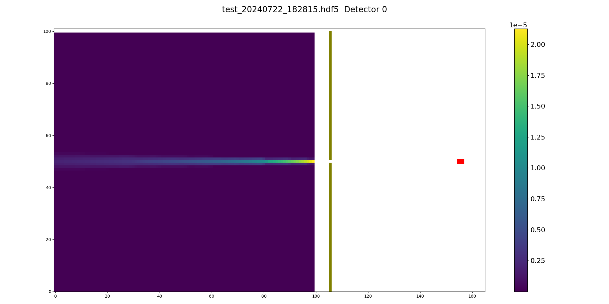

Introduction¶
pymatcal is a Python implementation of the ray-tracing-based analytical calculation of system response matrix of a single photon emission tomography system.
Key features of the project are:
Almost 100% Numpy-based.
Transition to a CUDA capable system should be easy with Python packages like CuPy
It is written in an MPI-ready style.
With the help of mpi4py, we can run the calculation in parallel with a short Python script.
System matrix I/O can be handled with the h5py package.
The h5py package provides a convenient API for writing data in parallel with MPI.
Example PPDF¶
The following image shows the PPDFs of a single pinhole detector unit. The detector system consists of a single pinhole and a detector system. The image is generated by the pymatcal package.
{kind=link}
Dependencies:¶
Must have:¶
Python 3.9.6 and above¶
Core Python packages:¶
On UB CCR HPC cluster nodes¶
Load modules:
Intel toolchain 2022.00
hdf5/1.14.1
python/3.9.6-bare
In a single line:
ml intel hdf5/1.14.1 python/3.9.6-bare